import os
import numpy as np
import copy
import pandas as pdKey ideas:
Before beginning with any sort of model building work it is important you get to know the data you’re handling. This includes not just understand the columns and row entries in the dataset but also the simple understanding on what each of the variable in the data means.
This step is a vital foundation for any successful analytics, modeling, and prediction task. It is called as the data exploratory analysis.
These are few some steps you can keep in mind when starting with an exploration of new dataset being presented: 1. Understand each descriptor in the data, type of data being encoded 2. Cleaning the data – look at null and NaN 3. Visualize variable distributions – use (appropriate) summary statistics * Primary analysis of data spread – histograms * Distribution functions 1. Probability mass functions 2. Cumulative distribution function 3. Kernel density estimates
- Explore relationship between variables
- Scatter plots
- Simple (linear) correlations (Pearson statistics)
- Simple (linear) regression
- Explore multivariate relationships
- Multiple regression (for continuous variables)
- Logistic regression (for categorical variables)
In this notebook I will cover some of these steps as we explore the Behavioral Risk Factor Surveillance Survey (BRFSS) dataset and try to tease out simple correlations with the variables.
BRFSS data obtained from: * https://www.kaggle.com/sakinak/behavioral-risk-factor-surveillance-survey-201619
Code book: This is an extremely important document helping us make sense of the data we’ve imported * https://www.cdc.gov/brfss/annual_data/2019/pdf/codebook19_llcp-v2-508.HTML
#----- PLOTTING PARAMS ----#
import matplotlib.pyplot as plt
from matplotlib.pyplot import cm
import seaborn as sns
# High DPI rendering for mac
%config InlineBackend.figure_format = 'retina'
# Plot matplotlib plots with white background:
%config InlineBackend.print_figure_kwargs={'facecolor' : "w"}
plot_params = {
'font.size' : 15,
'axes.titlesize' : 20,
'axes.labelsize' : 15,
'axes.labelweight' : 'bold',
'xtick.labelsize' : 10,
'ytick.labelsize' : 10,
}
plt.rcParams.update(plot_params)
sns.set_palette("colorblind")
sns.color_palette('colorblind')# Functions for PMF and CDF, we will come to those later in the notebook
def pmf(pandas_series):
values, counts = np.unique(pandas_series, return_counts = True)
pmf = np.c_[ values, counts / sum(counts) ]
return pmf
def cdf(pandas_series):
values, counts = np.unique(pandas_series, return_counts = True)
pmf = np.c_[ values, counts / sum(counts) ]
cdf = np.zeros(shape=pmf.shape)
for i in range(0, pmf.shape[0]):
cdf[i] = [pmf[i][0], np.sum(pmf[:i+1], axis=0)[-1]]
return cdf # Read archive file -- considering only the 2019 dataset
df = pd.read_csv('./archive/2019.csv')df.columnsIndex(['Unnamed: 0', '_STATE', 'FMONTH', 'IDATE', 'IMONTH', 'IDAY', 'IYEAR',
'DISPCODE', 'SEQNO', '_PSU',
...
'_VEGESU1', '_FRTLT1A', '_VEGLT1A', '_FRT16A', '_VEG23A', '_FRUITE1',
'_VEGETE1', '_FLSHOT7', '_PNEUMO3', '_AIDTST4'],
dtype='object', length=343)df.shape(418268, 343)df.info()<class 'pandas.core.frame.DataFrame'>
RangeIndex: 418268 entries, 0 to 418267
Columns: 343 entries, Unnamed: 0 to _AIDTST4
dtypes: float64(280), int64(63)
memory usage: 1.1 GBdf.columns[ df.isna().any() ]Index(['CTELENM1', 'PVTRESD1', 'COLGHOUS', 'STATERE1', 'CELPHONE', 'LADULT1',
'COLGSEX', 'NUMADULT', 'LANDSEX', 'NUMMEN',
...
'FRUTDA2_', 'GRENDA1_', 'FRNCHDA_', 'POTADA1_', 'VEGEDA2_', '_FRUTSU1',
'_VEGESU1', '_FLSHOT7', '_PNEUMO3', '_AIDTST4'],
dtype='object', length=275)The data is too big to be visualized and described using traditional NaN and summary statistics, rather let’s just checkout key columns and understand their distribution
1. Looking at individual columns
Sex of the respondent
Data is provided in the column marked as _SEX and the label are: * MALE = 1 * FEMALE = 2
df['_SEX'].value_counts()2 228433
1 189835
Name: _SEX, dtype: int64Annual Income of the respondent
INCOME2 Question: Is your annual household income from all sources
Value of 77 or 99 in the row is either Refused or Not sure. So take them out
_INCOMG Computed income categories
df['INCOME2'].value_counts()8.0 117793
7.0 54252
6.0 46572
99.0 40246
5.0 34496
77.0 32654
4.0 30001
3.0 23391
2.0 16122
1.0 15860
Name: INCOME2, dtype: int64df['_INCOMG'].value_counts()5 172045
9 79781
2 53392
4 46572
3 34496
1 31982
Name: _INCOMG, dtype: int64# Replace 77 99 with NaN
df['INCOME2'].replace([77, 99], np.nan, inplace=True)df['INCOME2'].value_counts()8.0 117793
7.0 54252
6.0 46572
5.0 34496
4.0 30001
3.0 23391
2.0 16122
1.0 15860
Name: INCOME2, dtype: int64df.shape(418268, 343)Drop the entries with NaN
df_income_no_nan = df.dropna(subset=['INCOME2'])
df_income_no_nan.shape(338487, 343)df_income_no_nan['INCOME2'].value_counts()8.0 117793
7.0 54252
6.0 46572
5.0 34496
4.0 30001
3.0 23391
2.0 16122
1.0 15860
Name: INCOME2, dtype: int64pmf_income = pmf(df_income_no_nan['INCOME2'])pmf_incomearray([[1. , 0.04685557],
[2. , 0.0476296 ],
[3. , 0.06910457],
[4. , 0.08863265],
[5. , 0.10191233],
[6. , 0.13758874],
[7. , 0.16027794],
[8. , 0.34799859]])plt.plot(pmf_income[:,0], pmf_income[:,1], marker='o')
plt.xlabel('Income Classes')
plt.ylabel('Frequency (normalized)')Text(0, 0.5, 'Frequency (normalized)')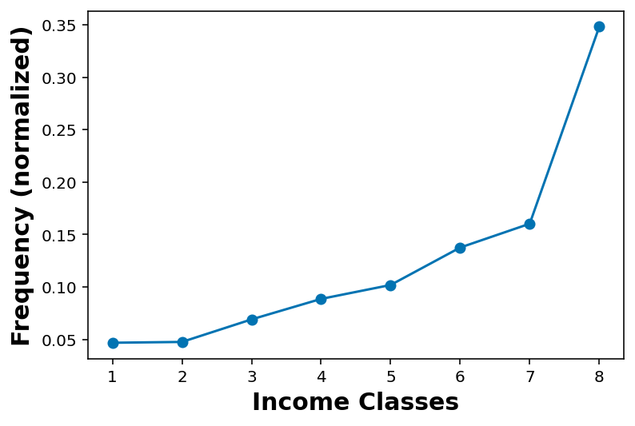
cdf_income = cdf(df_income_no_nan['INCOME2'])cdf_incomearray([[1. , 0.04685557],
[2. , 0.09448516],
[3. , 0.16358974],
[4. , 0.25222239],
[5. , 0.35413472],
[6. , 0.49172346],
[7. , 0.65200141],
[8. , 1. ]])plt.plot(cdf_income[:,0], cdf_income[:,1], marker='o')
plt.xlabel('Income Classes')
plt.ylabel('Cumulative Frequency (normalized)')Text(0, 0.5, 'Cumulative Frequency (normalized)')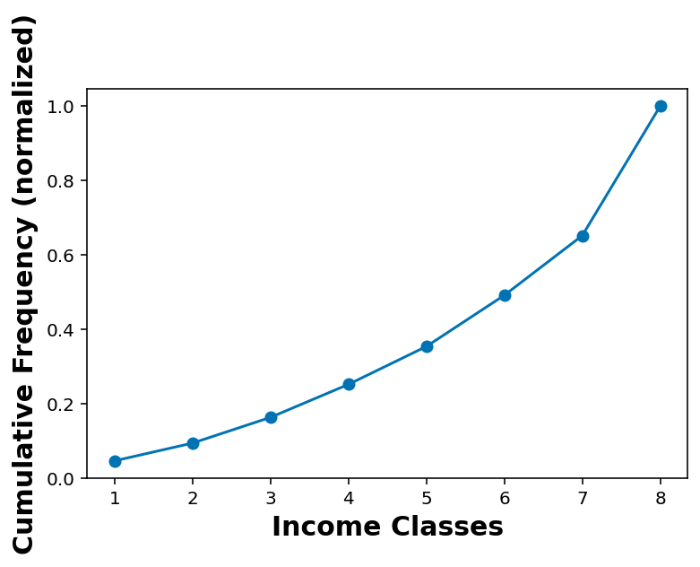
Looking at annual income classes as per sex of the respondent
df_income_no_nan_male = df_income_no_nan.loc[ df_income_no_nan['_SEX'] == 1 ]df_income_no_nan_female = df_income_no_nan.loc[ df_income_no_nan['_SEX'] == 2 ]cdf_income_male = cdf(df_income_no_nan_male['INCOME2'])
cdf_income_female = cdf(df_income_no_nan_female['INCOME2'])plt.plot(cdf_income_male[:,0], cdf_income_male[:,1], marker='o', label='Male')
plt.plot(cdf_income_female[:,0], cdf_income_female[:,1], marker='o', label='Female')
plt.plot(cdf_income[:,0], cdf_income[:,1], linestyle='--', label='Total')
plt.xlabel('Income Classes')
plt.ylabel('Cumulative Frequency (normalized)')
plt.legend()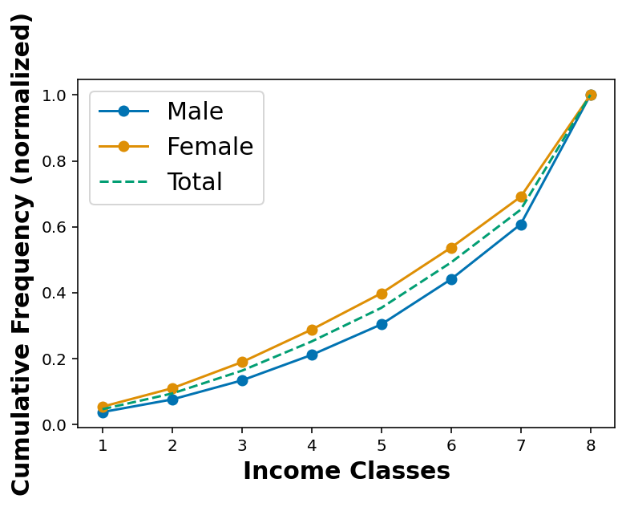
Considering the education level of the respondents
EDUCA What is the highest grade or year of school you completed?
9 and BLANK == Missing and Refused
_EDUCAG Computed level of education completed categories
df['EDUCA'].value_counts().sort_index()1.0 619
2.0 9940
3.0 19506
4.0 111890
5.0 116591
6.0 157887
9.0 1809
Name: EDUCA, dtype: int64df['EDUCA'].replace([9], np.nan, inplace=True)df['_EDUCAG'].value_counts()4 157887
3 116591
2 111890
1 30065
9 1835
Name: _EDUCAG, dtype: int64df['_EDUCAG'].value_counts(normalize=True).sort_index()1 0.071880
2 0.267508
3 0.278747
4 0.377478
9 0.004387
Name: _EDUCAG, dtype: float64df_education_no_na = df.dropna(subset = ['EDUCA'])df_education_no_na.shape(416433, 343)df_education_no_na_male = df_education_no_na.loc[ df_education_no_na['_SEX'] == 1 ]
df_education_no_na_female = df_education_no_na.loc[ df_education_no_na['_SEX'] == 2 ]cdf_educa_male = cdf(df_education_no_na_male['EDUCA'])
cdf_educa_female = cdf(df_education_no_na_female['EDUCA'])cdf_educa = cdf(df_education_no_na['EDUCA'])cdf_educaarray([[1.00000000e+00, 1.48643359e-03],
[2.00000000e+00, 2.53558195e-02],
[3.00000000e+00, 7.21964878e-02],
[4.00000000e+00, 3.40883167e-01],
[5.00000000e+00, 6.20858577e-01],
[6.00000000e+00, 1.00000000e+00]])plt.plot(cdf_educa_male[:,0], cdf_educa_male[:,1], marker='o', label='Male')
plt.plot(cdf_educa_female[:,0], cdf_educa_female[:,1], marker='o', label='Female')
plt.plot(cdf_educa[:,0], cdf_educa[:,1], linestyle='--', label='Total')
plt.xlabel('Level of education')
plt.ylabel('Cumulative Frequency (normalized)')
plt.legend()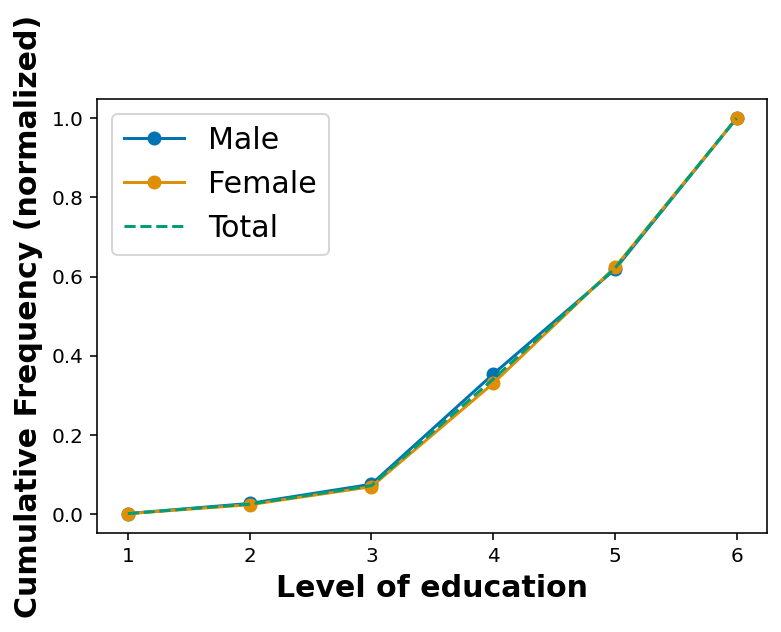
Height and Weight
## Height in meters
df.hist('HTM4')array([[<AxesSubplot:title={'center':'HTM4'}>]], dtype=object)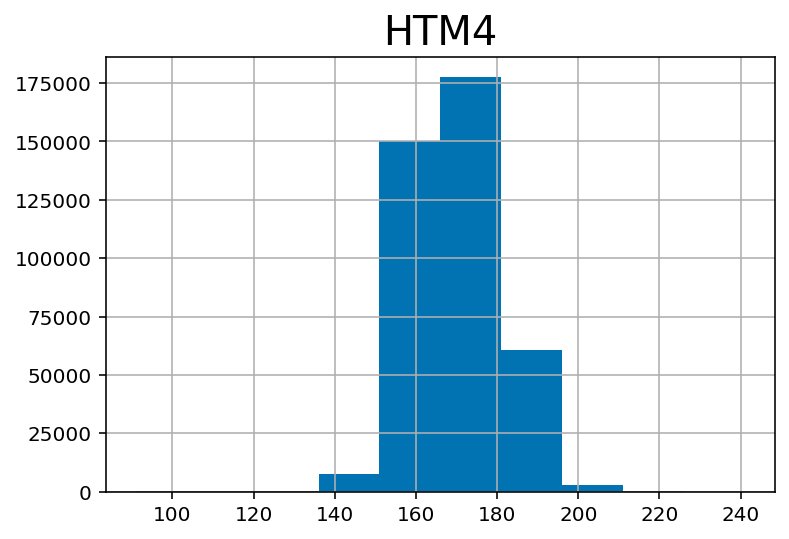
## Weight in kilograms:
df.hist('WTKG3')array([[<AxesSubplot:title={'center':'WTKG3'}>]], dtype=object)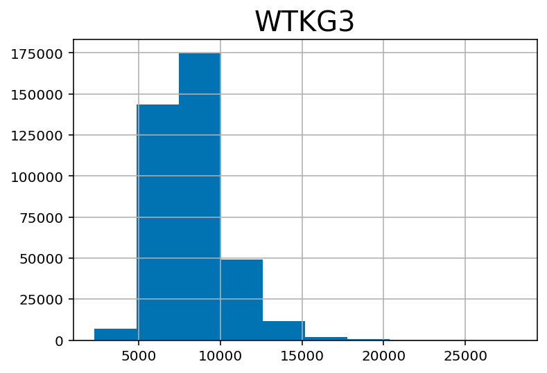
df['WTKG3'] = df['WTKG3'] / 100## Weight in kilograms:
df.hist('WTKG3')array([[<AxesSubplot:title={'center':'WTKG3'}>]], dtype=object)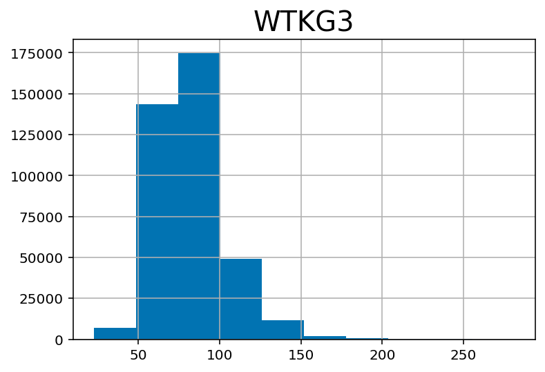
wt_male = df.loc[ df['_SEX'] == 1 ]['WTKG3']
wt_female = df.loc[ df['_SEX'] == 2 ]['WTKG3']plt.hist(wt_male, alpha=0.6, label='male')
plt.hist(wt_female, alpha=0.6, label='female')
plt.xlabel('Weight (kg)')
plt.legend()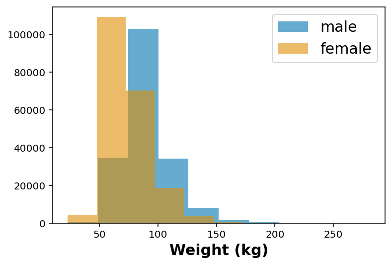
## Age category -- divided in 5 year interval
df.hist('_AGEG5YR')array([[<AxesSubplot:title={'center':'_AGEG5YR'}>]], dtype=object)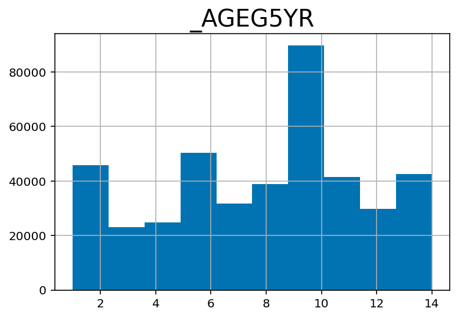
Quick plot for weight vs age-group
## Quick plot for weight as per age
df_no_nans = df.dropna( subset=['_AGEG5YR', 'WTKG3'] )fig, ax = plt.subplots(1,1, figsize=(6,6))
ax.scatter( df_no_nans['_AGEG5YR'], df_no_nans['WTKG3'], marker='o', alpha=0.5)
ax.set_xlabel('Age group')
ax.set_ylabel('Weight (kg)')Text(0, 0.5, 'Weight (kg)')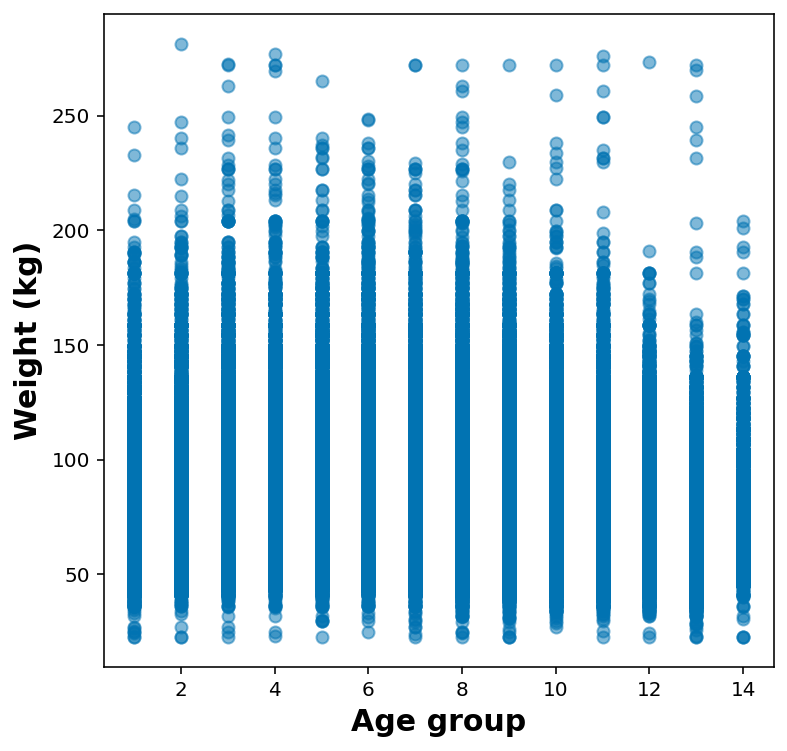
It makes much more sense to show these as either violin or box plot:
- Violin plot – KDE for that column around the y Each column is a graphical representation of the distribution of weight in one age group. The width of these shapes is proportional to the estimated density, so it’s like two vertical PDFs plotted back to back.
- Box plot – Each box represents the interquartile range, or IQR, from the 25th to the 75th percentile. The line in the middle of each box is the median. The spines sticking out of the top and bottom show the minimum and maximum values. Looking at the medians, it seems like people in their 40s are the heaviest; younger and older people are lighter. Looking at the sizes of the boxes, it seems like people in their 40s have the most variability in weight, too. These plots also show how skewed the distribution of weight is; that is, the heaviest people are much farther from the median than the lightest people.
import seaborn as sns
ax = sns.boxplot(x = '_AGEG5YR', y = 'WTKG3', whis=10, data = df_no_nans)
ax.set_xlabel('AGE GROUP')
ax.set_ylabel('WEIGHT (Kgs)')Text(0, 0.5, 'WEIGHT (Kgs)')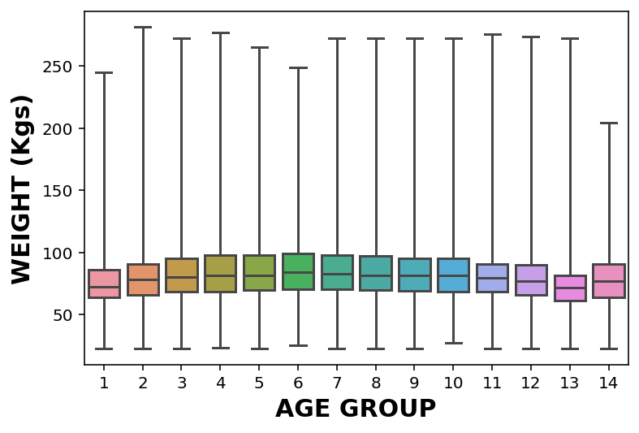
Quick plot for height vs weight
df_height_wt = df.dropna( subset=['HTM4', 'WTKG3'] ).sample(50000)fig, ax = plt.subplots(1,1, figsize=(6,6))
ax.scatter( df_height_wt['HTM4'], df_height_wt['WTKG3'], marker='o', alpha=0.5)
ax.set_xlabel('Height (m)')
ax.set_ylabel('Weight (kg)')Text(0, 0.5, 'Weight (kg)')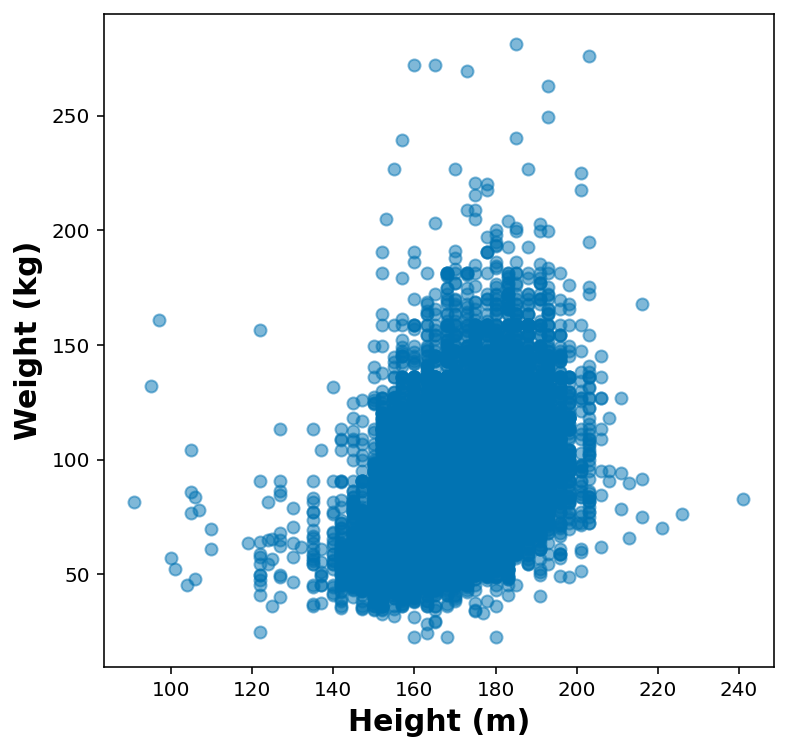
height_jitters = df_height_wt['HTM4'] + np.random.normal(0, 2, size=len(df_height_wt))
weight_jitters = df_height_wt['WTKG3'] + np.random.normal(0, 2, size=len(df_height_wt))fig, ax = plt.subplots(1,1, figsize=(6,6))
ax.scatter( height_jitters, weight_jitters, marker='o', alpha=0.01)
ax.set_xlabel('Height (m)')
ax.set_ylabel('Weight (kg)')Text(0, 0.5, 'Weight (kg)')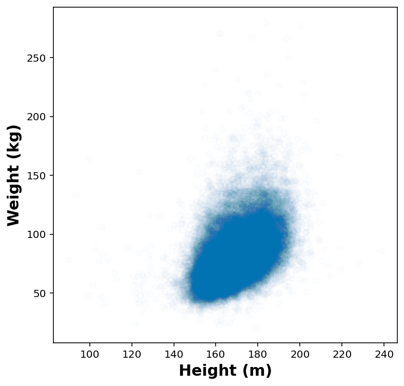
Fit a linear regression model
from sklearn.linear_model import LinearRegression
x = height_jitters.values.reshape(-1,1)
y = weight_jitters.values.reshape(-1,1)
reg = LinearRegression().fit(x, y)x.min()90.14298210689765print(reg.coef_, reg.intercept_, reg.score(x,y))[[0.90102916]] [-71.05446729] 0.2163310658640062height_test = np.linspace(x.min(), x.max()).reshape(-1, 1)fig, ax = plt.subplots(1,1, figsize=(6,6))
ax.plot( height_test, reg.predict(height_test), 'r--', alpha=0.5)
ax.scatter( height_jitters, weight_jitters, marker='o', alpha=0.01)
ax.set_xlabel('Height (m)')
ax.set_ylabel('Weight (kg)')Text(0, 0.5, 'Weight (kg)')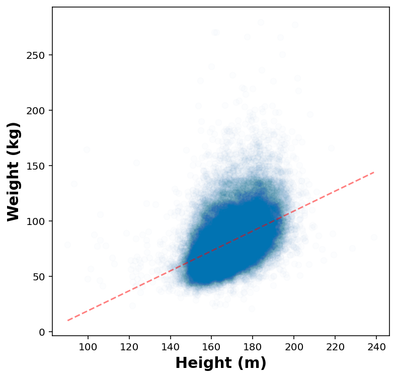